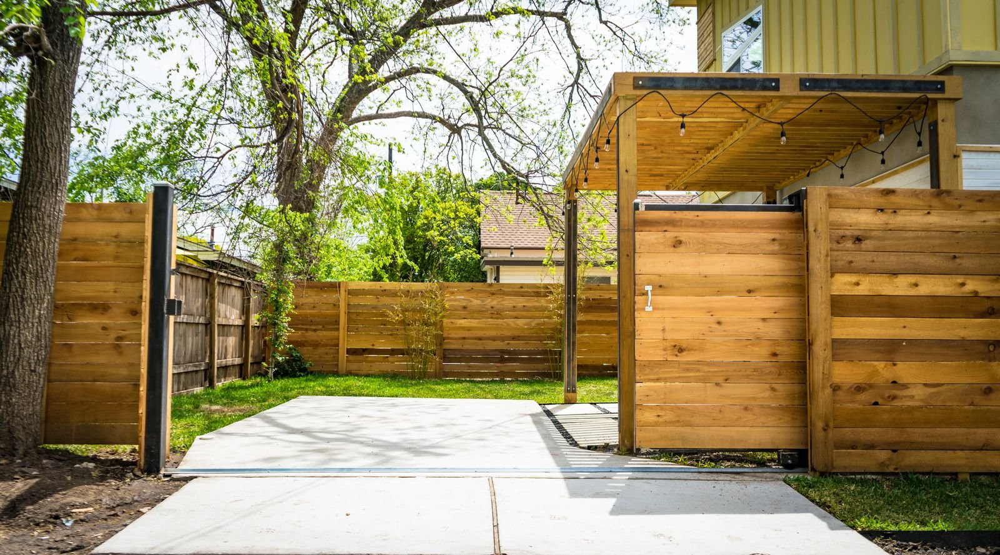

Fencing done right, the first time.
MK Fencing & Construction Services is a small, woman-owned fence company serving Brazos County — new installs, repairs, and a crew reviewers describe as honest, reliable, and easy to work with.

About
A small business built on being easy to work with
MK Fencing & Construction Services is a small, woman-owned fence company that started up in 2022, serving Brazos County rather than working from a single storefront address. Google’s own listing confirms the women-owned attribute directly — a verified detail, not marketing copy.
What comes through in the business’s five Google reviews is consistent: clear communication throughout a job, attention to detail, and a crew reviewers say “really cares about doing a good job.” For a two-year-old business, that’s a strong start.
Business details verified via MK Fencing & Construction Services’ public Google Business listing, checked 2026-09-03. Full sourcing is in this demo’s README.
What we build
Wood & cedar privacy fences
Modern and traditional wood fencing, built to last.
Metal & ornamental fencing
Black metal frames and gates for a cleaner, modern look.
Fence repair
Damaged sections, leaning posts, and gate hardware fixed.
General construction services
Additional construction work — ask what’s possible for your project.
These are general examples — call (979) 595-3050 to confirm exactly what MK Fencing can build for you.
Where we work
Proudly serving Brazos County
MK Fencing & Construction Services is a service-area business — there’s no single storefront to visit. Instead, the crew comes to you, anywhere in Brazos County, including Bryan and College Station.
On Google
Five reviews, five stars
Every review MK Fencing & Construction Services has on Google is a perfect five stars — a small but genuine sample for a business that’s a little over two years old.
Full written reviews will appear here once connected — nothing invented, nothing edited, exactly what’s posted on Google.
See us on Google5.0 rating · 5 reviews, MK Fencing & Construction Services’ public Google Maps listing — verified 2026-09-03.
Get in touch
Ready to talk about your fence?
Call or email MK Fencing & Construction Services — tell us about your property and we’ll go from there.